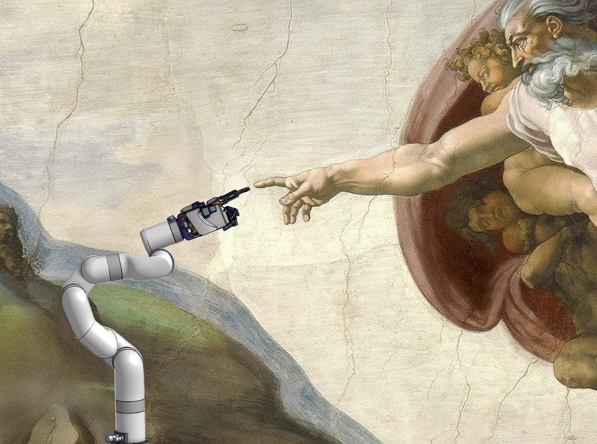

Ethan Cratchley
I’m a Computer Science & Business student specializing in AI currently working as a SWE and Venture Scout. I spend most of my time building, researching and studying AI and how it can be applied to various industries. I'm driven by curiosity and a desire to understand the world around me. I enjoy solving problems at a global scale, learning across a wide variety of domains, and exploring how technology can shape the future. Outside of work, I play soccer and golf, and spend my time hacking on electronics projects, playing strategy games, studying history, and thinking about the future.

Currently
Pursuing a Bachelor of Computer Science and Business Administration Joint Major with a Concentration in Artificial Intelligence at Simon Fraser University.
Working at Autnommi as a Software Engineer working on RAG systems and applying AI to various industries (e.g. insurance, construction).
I'm also a Scout at Front Row Ventures, always eager to connect with early-stage founders and ambitious student startups.
Studying, writing, and building in order to "change things not by fighting the existing reality but by building a new model that makes the existing model obsolete."